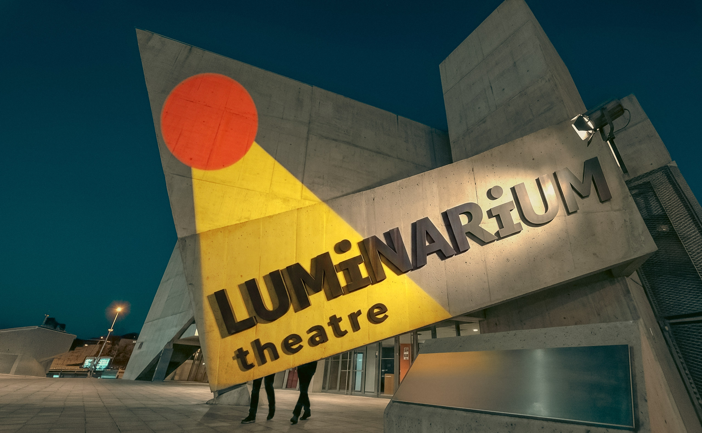
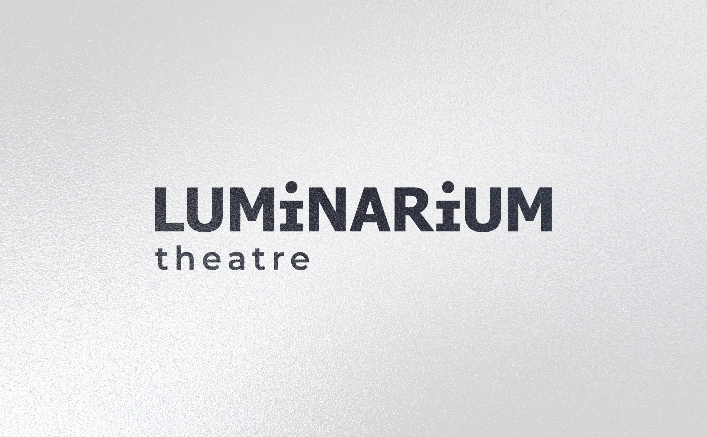
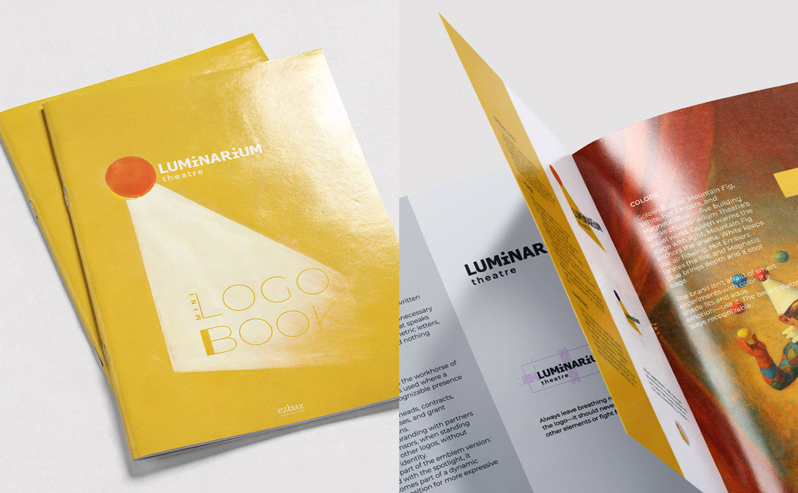
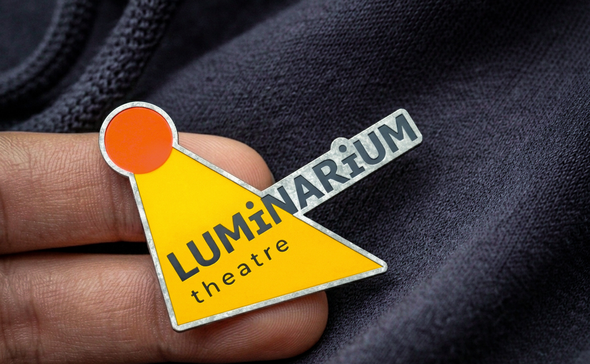
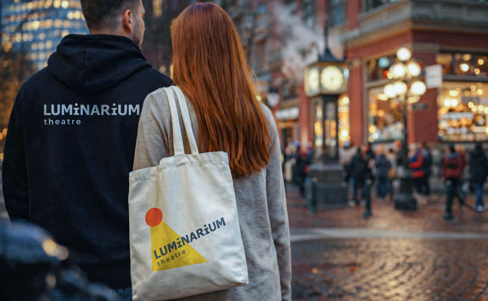

Luminarium Theatre
It started with a name. A visual identity for a contemporary theatre shaped by light, structure, and restraint.
The name suggested light. The work had to find its form.
Luminarium is a theatre and acting school based in Vancouver. The identity had to feel contemporary, clear, and culturally self-aware — without falling into theatrical cliché.
The project began with the name Luminarium — a word suggesting light, space, and visibility across languages.





An early direction leaned toward a lighthouse, but it felt too literal. Instead of illustrating the idea, I moved toward a more restrained system built around the word itself.
The primary logo is typographic: clean, stable, and deliberately restrained. The emblem adds a more expressive layer through a circle, a beam, and a diagonal shift.